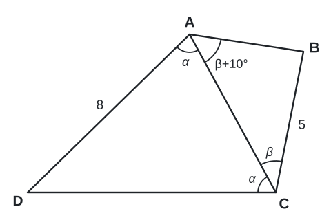

A, B ו־C הן שלוש ספרות עוקבות כך ש־A < B < C. נתון:
ABC
+ CBA
------
EEE0
(הערה: ספרת האחדות בתוצאה היא אפס (0) ולא האות O.)
מה מהבאים נכון בהכרח?
הצגת הפתרון
התשובה הסופית4תשובה (4)כל התשובות נכונות בהכרח
דרך הפתרון והסבר
התרגיל: ABC + CBA = EEE0. נכתוב לפי ערכי המקום:ABC + CBA = 100A + 10B + C + 100C + 10B + A = 101(A + C) + 20Bהספרות עוקבות, ולכן A + C = 2B:101 · 2B + 20B = 222Bהתוצאה מסתיימת ב־0, ולכן 222B מתחלק ב־10, ו־B = 5:222 · 5 = 1110 ⇒ E = 1 (ו־A = 4, C = 6: 456 + 654 = 1110 ✓)נבדוק את הטענות. הפרש בין מספרים עם ספרות חוזרות עוקבות הוא 111:(1) CCC − BBB = 666 − 555 = 111 = EEE ✓(2) BBB − AAA = 555 − 444 = 111 = EEE ✓(3) CCC − AAA = 222 = 2 × EEE ✓כל הטענות נכונות: תשובה (4).
מוקשים נפוצים
הפרש בין ddd ל־(d+1)(d+1)(d+1) הוא תמיד 111.
נבדקהפתרון תואם את מפתח התשובות של הספר.
התרגיל עצמו (חיבור האותיות) לא הועתק; ההסבר מניח E = 1 כפי שעולה מהמפתח.
שאלה 2
מכונת מילוי בלוני גז ממלאת בלון גז של 5 ליטרים ברבע שעה. יום אחד, בעקבות חור בבלון הגז, ארך המילוי במכונה חצי שעה.
בתוך כמה דקות יתרוקן בלון גז מלא של 15 ליטרים אם יש בו חור הקטן פי 2 מהחור שהיה בבלון הקטן?
הצגת הפתרון
התשובה הסופית4תשובה (4)180
דרך הפתרון והסבר
קצב המילוי:5 ליטר ב־15 דקות = 13 ליטר לדקה.עם החור, 5 ליטר מולאו ב־30 דקות:קצב נטו: 530 = 16 ליטר לדקה.החור מאבד: 13 − 16 = 16 ליטר לדקה.חור קטן פי 2 מאבד פי 2 פחות:112 ליטר לדקה.ריקון בלון של 15 ליטר:15 ÷ 112 = 180 דקות
מוקשים נפוצים
קצב נטו = מילוי פחות דליפה – כך מחשבים את קצב הדליפה.
נבדקהפתרון תואם את מפתח התשובות של הספר.
שאלה 3
בכד תרוזים כחולים ואדומים. 25% מהתרוזים האדומים מהווים 10% מכלל התרוזים בכד.
מה היחס בין מספר התרוזים הכחולים למספר התרוזים האדומים בכד?
הצגת הפתרון
התשובה הסופית2תשובה (2)3:2
דרך הפתרון והסבר
נסמן את מספר התרוזים האדומים R ואת הכולל T.25% מהאדומים = 10% מהכולל: 0.25R = 0.1TR = 0.4Tהכחולים הם השאר:0.6Tהיחס כחולים : אדומים:0.6 : 0.4 = 3 : 2
מוקשים נפוצים
השאלה על כחולים לאדומים – לא להפוך את היחס.
נבדקהפתרון תואם את מפתח התשובות של הספר.
שאלה 4
גליל שאורך רדיוס הבסיס שלו הוא 3 וגובהו 3 יכול להכיל 54 ק"ג קמח. כמה ק"ג קמח יכול להכיל, לכל היותר, חרוט שרדיוס הבסיס שלו הוא 2 וגובהו זהה לגובה הגליל?
הצגת הפתרון
התשובה הסופית2תשובה (2)8
דרך הפתרון והסבר
נפח הגליל (רדיוס 3, גובה 3):π · 3² · 3 = 27π, ובו 54 ק"ג.כל π של נפח מכיל 2 ק"ג.נפח החרוט (רדיוס 2, גובה 3):13 · π · 2² · 3 = 4π4 · 2 = 8 ק"ג
מוקשים נפוצים
נפח חרוט הוא שליש מגליל עם אותו בסיס וגובה.
נבדקהפתרון תואם את מפתח התשובות של הספר.
שאלה 5
בשק 21 כדורים – 7 כחולים, 7 אדומים ו־7 ירוקים. החל מהשעה 12:00, אחת ל־20 דקות ניגשת דפנה לשק, מוציאה כדור אחד ורושמת את צבעו בטרם היא מחזירה אותו לשק. החל מהשעה 12:01 ניגש גם יונתן, אחת ל־25 דקות, ומוציא כדור אחד רושם את צבעו ומחזיר אותו לשק.
מה הסיכוי שעד השעה 14:00 גם דפנה וגם יונתן הוציאו את אותו הצבע, ורק אותו?
הצגת הפתרון
התשובה הסופית3תשובה (3)(⅓)¹¹
דרך הפתרון והסבר
נספור כמה הוצאות היו עד 14:00.דפנה (כל 20 דקות מ־12:00): 12:00, 12:20, …, 14:00 – 7 הוצאות.יונתן (כל 25 דקות מ־12:01): 12:01, 12:26, 12:51, 13:16, 13:41 – 5 הוצאות.סך הכול: 12 הוצאות.כל הוצאה בלתי תלויה (הכדור מוחזר), וסיכוי לכל צבע 13.הסיכוי שכל 12 ההוצאות באותו צבע מסוים:(13)¹²יש 3 צבעים אפשריים:3 · (13)¹² = (13)¹¹
מוקשים נפוצים
לא לשכוח את שלוש אפשרויות הצבע – זה מוריד את המעריך ב־1.
נבדקהפתרון תואם את מפתח התשובות של הספר.
שאלה 6
בסרטוט שלפניכם מעגל שמרכזו O ורדיוסו r ובו גזרה בעלת זווית של 72°, גזרה בעלת זווית של 60° וגזרה בעלת זווית ישרה.
מה גודלו של השטח הלבן?
הצגת הפתרון
התשובה הסופית3תשובה (3)(2360)πr²
דרך הפתרון והסבר
שלוש הגזרות האפורות: 72°, 60° ו־90° (זווית ישרה).יחד: 72° + 60° + 90° = 222°השטח הלבן – שאר המעגל:360° − 222° = 138°138360πr² = 2360πr²
מוקשים נפוצים
השטח הלבן הוא מה שנשאר אחרי שמורידים את שלוש הגזרות.
נבדקהפתרון תואם את מפתח התשובות של הספר.
שאלה 7
a ו־b מספרים שלמים. נתון: b < a
מה מהבאים נכון בהכרח?
הצגת הפתרון
התשובה הסופית3תשובה (3)אם b, a < 0 אזי |a| + b < |b| + a
דרך הפתרון והסבר
נבדוק את טענה (3) – כש־a ו־b שליליים:|a| = −a, |b| = −b|a| + b = b − a, ו־|b| + a = a − bb < a, ולכן b − a שלילי ו־a − b חיובי:|a| + b < |b| + a ✓טענה (1) היא ההפך – לא נכונה. בטענה (2), כששניהם חיוביים: |a| + b = a + b = |b| + a – שווים, לא קטן.
מוקשים נפוצים
|a| = −a כש־a שלילי.
נבדקהפתרון תואם את מפתח התשובות של הספר.
שאלה 8

נתון: α > 60° , β < 50°.
בהסתמך על נתונים אלו ועל נתוני הסרטוט, מה מבין האפשרויות הבאות יכול להיות אורכה של צלע AC?
הצגת הפתרון
התשובה הסופית3תשובה (3)7
דרך הפתרון והסבר
האלכסון AC מחלק את המרובע לשני משולשים.משולש ACD: הזוויות ב־A וב־C שוות (α), ולכן הוא שווה־שוקיים: DC = DA = 8.הזווית ב־D: 180° − 2α. α > 60°, ולכן ∢D < 60° < α.מול הזווית הקטנה ביותר הצלע הקצרה ביותר: AC < 8.משולש ABC: ∢A = β + 10°, ∢C = β, ולכן ∢B = 180° − 2β − 10° = 170° − 2β.β < 50°, ולכן ∢B > 70°, יותר מ־β + 10° (פחות מ־60°) ומ־β.∢B הגדולה ביותר במשולש, ולכן AC, שמולה, הצלע הארוכה ביותר: AC > BC = 5.לכן 5 < AC < 8. מבין התשובות: 7.
מוקשים נפוצים
מול זווית גדולה יותר נמצאת צלע ארוכה יותר – בכל משולש בנפרד.
נבדקהפתרון תואם את מפתח התשובות של הספר.
שאלה 9
עמית יצאה לרכיבה על אופניה במסלול מעגלי שרדיוסו r. שעה לאחר שיצאה, בעת שעברה שליש מהדרך, יצא איתי, במהירות גבוהה משל עמית, בעקבותיה על אופניו. שניהם נפגשו לראשונה בנקודת היציאה שלהם לאחר שאיתי הקיף את המעגל כולו פעמיים.
מהירותה של עמיתמהירותו של איתי = ?
הצגת הפתרון
התשובה הסופית2תשובה (2)56
דרך הפתרון והסבר
נמדוד את המסלול בהקפות. עמית עוברת 13 הקפה בשעה (שליש בשעה הראשונה).כשאיתי יוצא, עמית כבר 13 הקפה לפניו. נסמן את מהירות איתי v (הקפות לשעה) ואת הזמן עד המפגש t.איתי פוגש את עמית כשהוא משלים את הפער:vt = 13 + 13tבאותו רגע איתי השלים 2 הקפות:vt = 2 ⇒ 2 = 13 + t3 ⇒ t = 5v = 25היחס:13 ÷ 25 = 56בדיקה: עמית עברה 13 + 53 = 2 הקפות – באמת בנקודת היציאה ✓
מוקשים נפוצים
עמית כבר עברה שליש מהדרך כשאיתי יוצא – זה הפער שהוא צריך לסגור.
נבדקהפתרון תואם את מפתח התשובות של הספר.
שאלה 10
6 מכונות דפוס, העובדות בקצב זהה וקבוע, מדפיסות 8 ספרים ב־12 ימי עבודה של 10 שעות. בעל בית הדפוס רכש עוד 12 מכונות דפוס הזהות לקיימות ושינה את שעות העבודה במהלך השבוע.
כמה ימי עבודה ידרשו לכל מכונות הדפוס יחדיו להדפיס 6 ספרים אם כעת יש ביום עבודה רק 8 שעות?
הצגת הפתרון
התשובה הסופית2תשובה (2)3¾
דרך הפתרון והסבר
נמדוד עבודה בשעות־מכונה.6 מכונות · 12 ימים · 10 שעות = 720 שעות־מכונה ל־8 ספרים.לספר אחד: 7208 = 90 שעות־מכונה.ל־6 ספרים:6 · 90 = 540 שעות־מכונה.עכשיו יש 6 + 12 = 18 מכונות, ויום עבודה של 8 שעות:ביום: 18 · 8 = 144 שעות־מכונה.540144 = 3.75 = 334 ימים